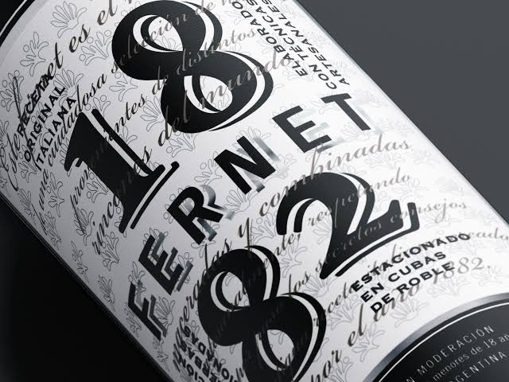
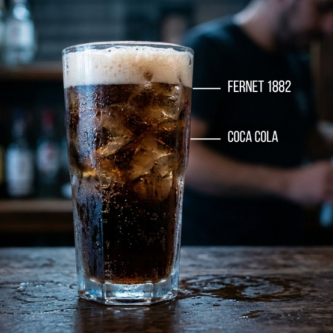

El fernet de la gente

Nuestros productos
Contactanos ▶Cómo preparar Fernet 1882

-
Hielo hasta arriba
Llená el vaso o la jarra con mucho hielo en cubos grandes para mantener la frescura y bajar la espuma inicial.
-
30% de Milocho
Serví el Fernet 1882 lentamente hasta completar casi un tercio del vaso.
-
70% de Cola
Incliná el vaso a 45° y volcá la bebida de cola suavemente para lograr la espuma perfecta de dos dedos arriba.